MSK Infections
- Hand: cellulitis (superficial, dorsal, wrist to MCPs, irregular margins) gets antibiotics. A deep infection (septic joint, paronychia, felon, flexor tenosynovitis) gets incision and drainage + wound care + antibiotics. Rest and elevate both.
- Kanavel's four signs of flexor tenosynovitis: swollen whole finger, held flexed, tender along the sheath, pain on passive extension. Cat bite = Pasteurella; fight bite over the MCP = Eikenella.
- Septic arthritis is a medical emergency, usually from hematogenous seeding. Aspirate (cell count, crystals, Gram stain and culture), get blood cultures, call ortho for a washout, and start cefazolin 2 g IV q8h (covers S. aureus and streptococci); vancomycin if MRSA risk (injection drug use, known colonization).
- Osteomyelitis is mostly S. aureus. X-ray and CT can't rule it out; MRI is the most sensitive. Chronic OM leaves dead bone (sequestrum) that antibiotics can't reach: antibiotics alone will not save you.
- Diabetic foot: ask is it really infected, how long, how sick, and why did it happen. Probe to bone = likely OM; foul smell = anaerobes. Don't swab a clean wound. Treatment is offloading, debridement, blood supply and patient engagement as much as antibiotics.
Learning Objectives
- Determine a differential diagnosis for an acutely swollen joint or soft tissue.
- List the common pathogens for septic arthritis and outline a management plan (investigations and treatment).
- Describe the pathology, presentation and management of osteomyelitis and discitis.
- Describe the pathology, presentation and management of superficial and deep space hand infections.
- Describe the pathology, presentation and management of diabetic foot infections.
Four recordings (80 min): hand infections (Dr. K. Faber, hand surgery, 12 min), then septic arthritis, osteomyelitis and diabetic foot infection (Dr. M. Devlin, infectious diseases, 25, 21 and 22 min). Monoarthritis from the rheumatology side (gout and pseudogout) is in 11.2.
Hand Infections
Common, because hands get injured and their joints and compartments sit close to the skin. The one job: tell cellulitis from a deep infection.
Cellulitis vs Deep Infection
| Cellulitis | Deep infection (abscess) | |
|---|---|---|
| Depth | Superficial skin infection | Deep tissue: a collection of pus |
| Where | Dorsum, from the wrist to the MCPs; rarely onto the fingers | Fingertip, around joints, palmar surface |
| Edges | Irregular margins of redness | Localized swelling and pus |
| Treatment | Antibiotics, rest, elevation, gentle movement; settles quickly | Incision and drainage, wound care, antibiotics (broad first, then narrowed to the culture) |
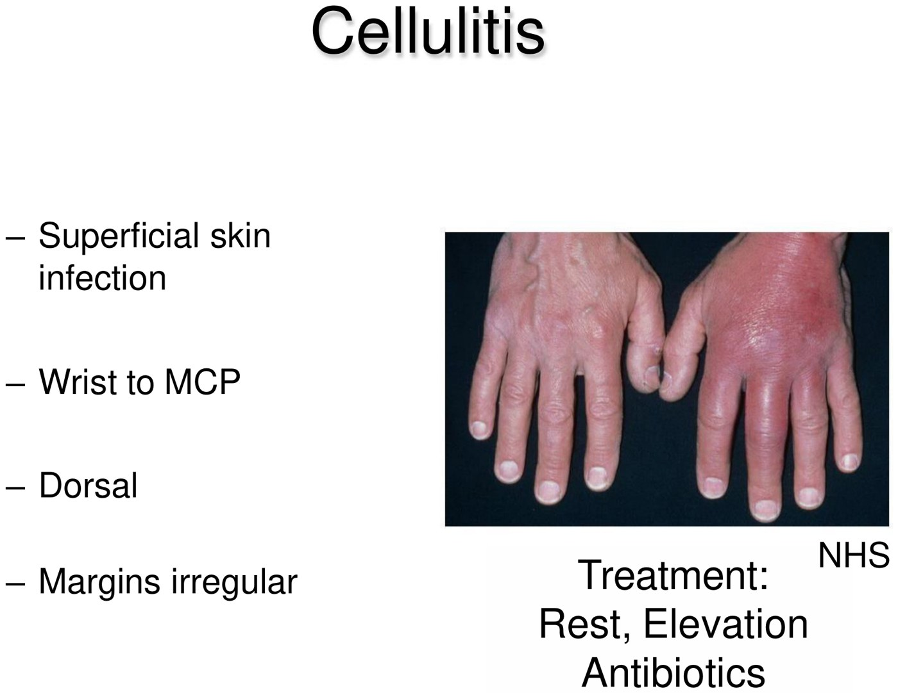
Cellulitis: dorsal, wrist to MCPs, irregular edge. From the deck (photo: NHS).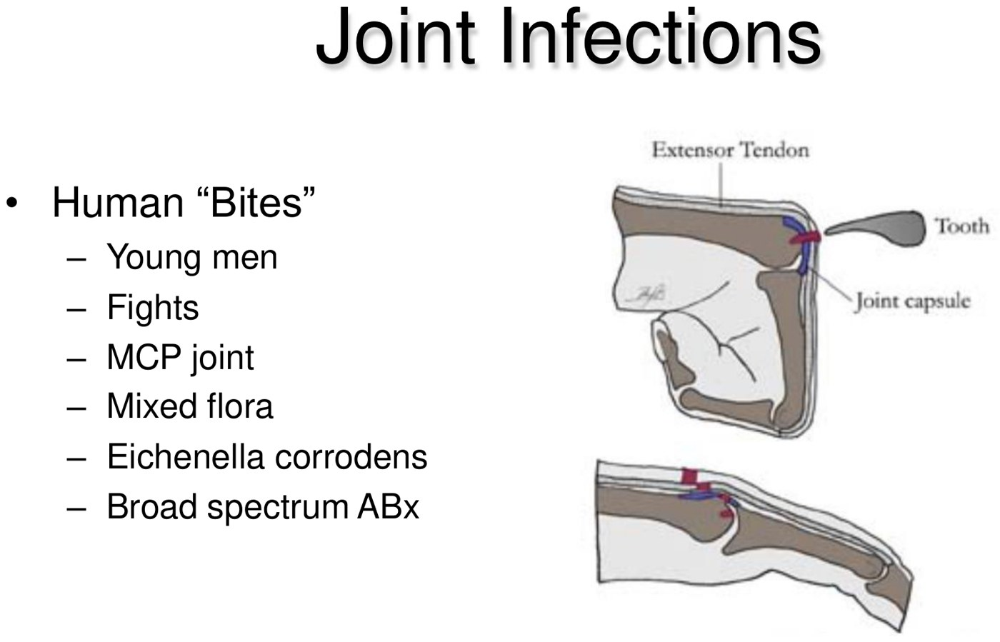
The fight bite: a tooth goes through skin and extensor tendon into the MCP joint of a clenched fist. From the deck.The Deep Hand Infections
| Infection | Where and who | Organisms |
|---|---|---|
| Cat bite (septic joint) | Teeth enter the PIP or DIP joint | Mixed; Pasteurella multocida |
| Human “bite” (fight bite) | Young men, fights; the MCP joint | Mixed mouth flora; Eikenella corrodens |
| Paronychia | Nail fold. F > M; common in health care workers (wet hands) | S. aureus; mixed in diabetes; fungal if immunocompromised |
| Felon | Pulp space of the fingertip, often after a small puncture (a thorn) | Cultured at drainage |
| Suppurative (flexor) tenosynovitis | Pus in the flexor tendon sheath, often days after a small palmar puncture | Cultured at drainage |
All of them: incision and drainage, wound care, antibiotics (start broad, then narrow to the culture). Bites need broad-spectrum cover. Left alone they progress fast: the cat bite below went from septic joint to bone erosion (osteomyelitis) in 10 days.
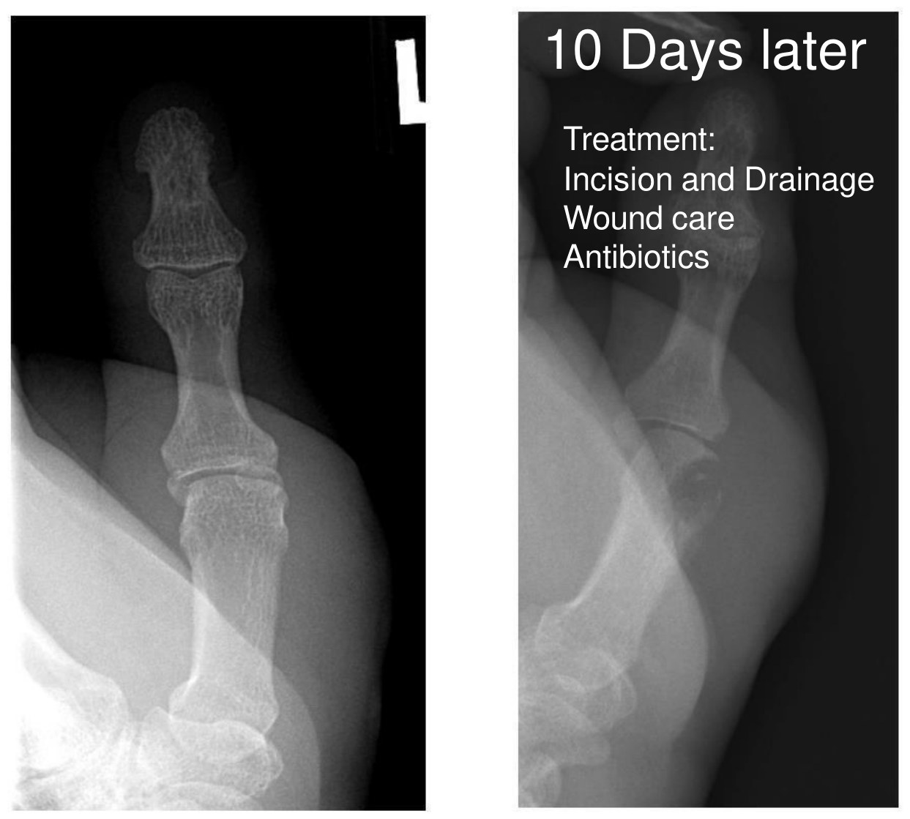
Cat bite, day 0 and day 10: septic MCP joint now eroding bone. From the deck.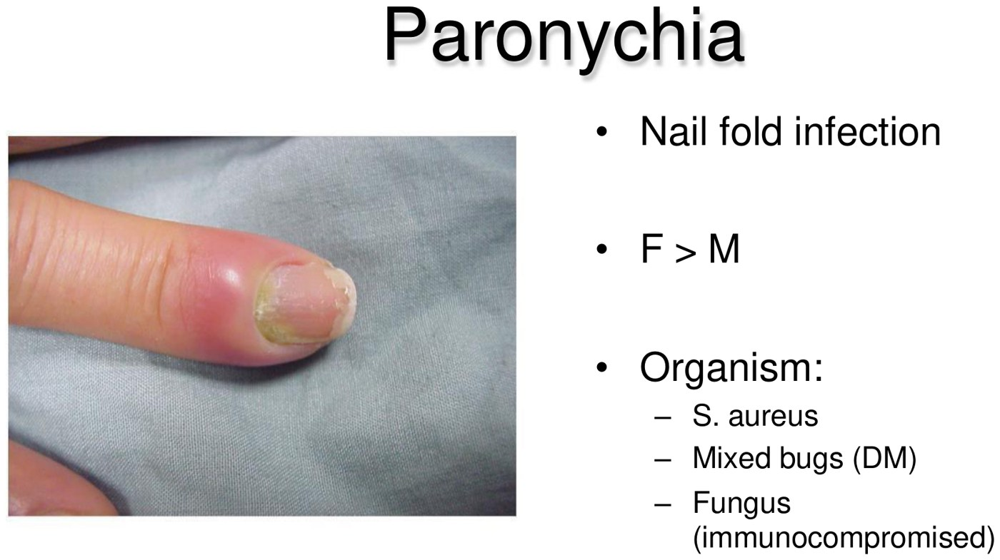
Paronychia: nail fold. Drained with a small slit along the nail edge. From the deck.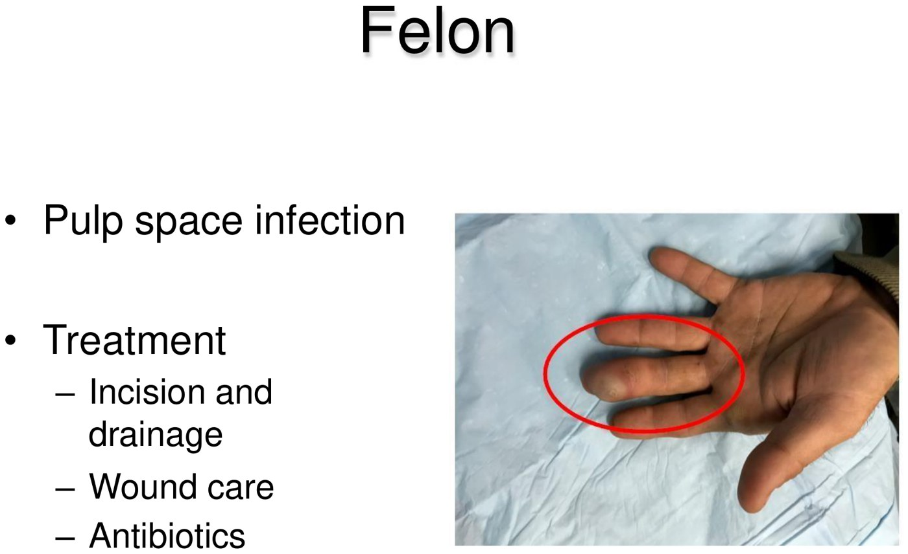
Felon: tense, swollen pulp space. From the deck.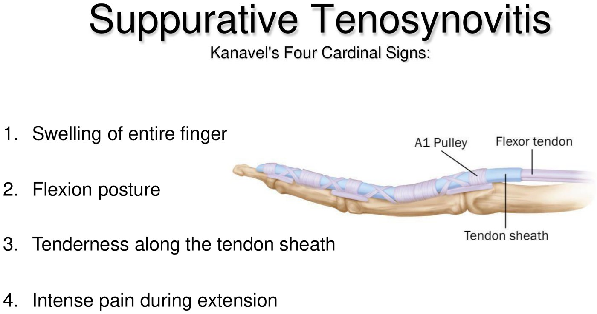
Kanavel's four cardinal signs. From the deck.The tendon sheath holds the most volume when the finger is slightly bent, so the finger rests flexed to make room for the pus. Straightening it squeezes the sheath, which is why passive extension hurts most. Tenderness runs along the sheath and stops beyond it (at the pulp).
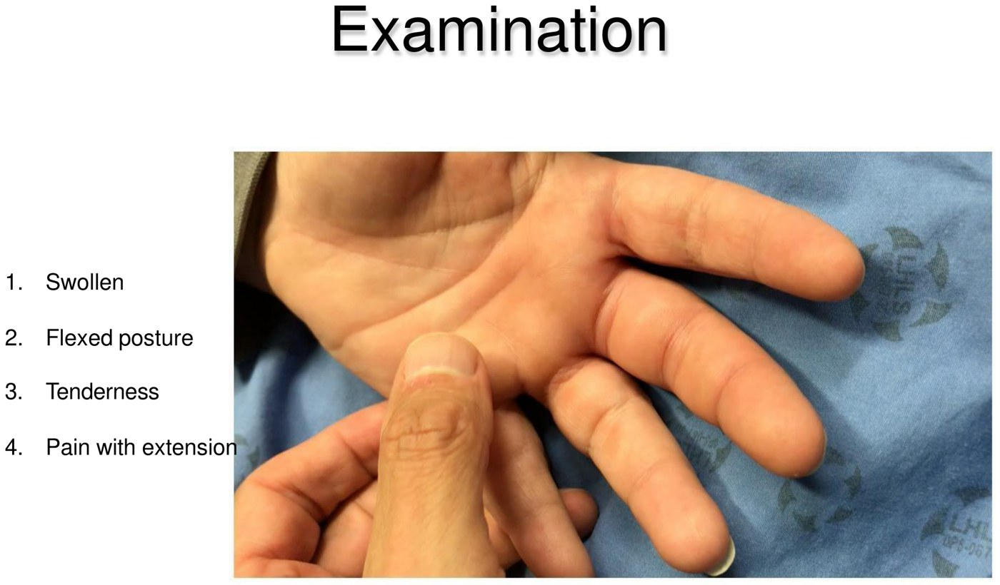
Septic Arthritis
A 28-year-old man: “My knee hurts”, sudden onset, can barely stand.
History, Exam and the Differential
| History | Why |
|---|---|
| Onset (OPQRST) and pattern: how many joints, symmetric? | One joint, acute = acute monoarthritis |
| Associated features: fever, rash | Pustules point to disseminated gonococcal infection |
| Exposures: injection drug use, sexual contact, travel | Tell you which organism, and so which antibiotic |
| Risk factors: immune compromise, diabetes, alcohol, age > 80, injection drug use, RA (or other joint disease); surgery, trauma, injections | Why this patient, why now |
| Exam | What to note |
|---|---|
| General | Vital signs: is this sepsis? |
| Inspection | Effusion (loss of the parapatellar gutters), erythema, an old scar, a rash |
| Palpation | Warmth compared with the other side (a > 2°C difference is significant); a subtler effusion |
| Range of motion and function | Severely limited by pain, active and passive |
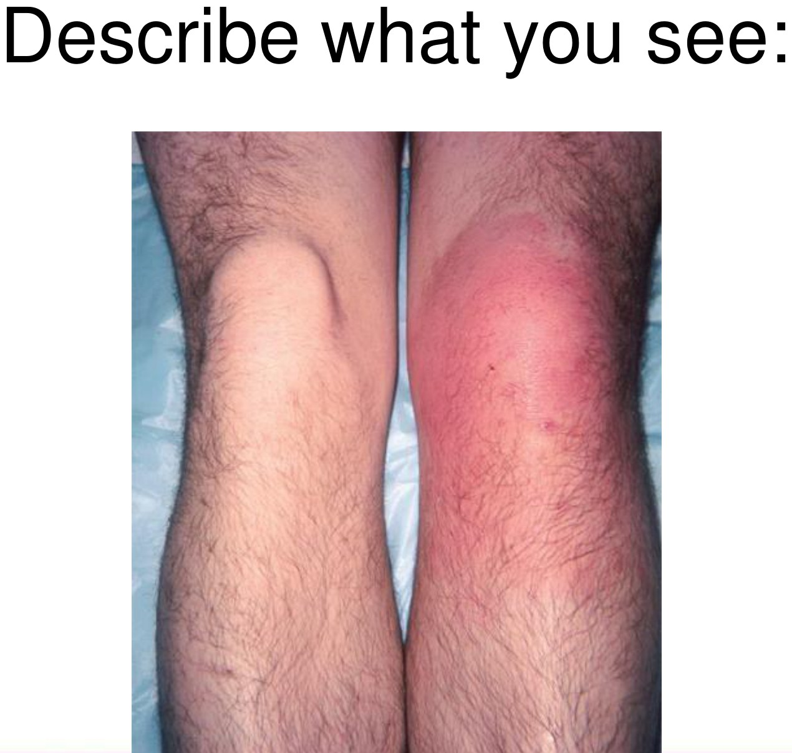
Red, hot, swollen knee: erythema, lost parapatellar gutters, an effusion. From the deck. Why it's an emergency: purulent effusion → enzymes destroy the cartilage → ankylosis. From the deck (textbook figure).
Why it's an emergency: purulent effusion → enzymes destroy the cartilage → ankylosis. From the deck (textbook figure).
| Acute monoarthritis: differential | |
|---|---|
| Infection | Bacterial (by far the commonest, especially a knee); viral, mycobacterial, fungal |
| Crystal | Gout (think of it first for a hot big toe), CPPD (pseudogout); see 11.2 |
| Inflammatory | Reactive arthritis, RA, sarcoid |
| Trauma / blood | Injury; hemarthrosis (coagulopathy) |
| Malignancy | Rare, more subacute |
Red flags for infection: fever, pain, and a big drop in range of motion.
Investigations and the Joint Aspirate
- Bloodwork: CBC, electrolytes, creatinine, CRP.
- Microbiology: blood cultures and a joint aspirate.
- ± Imaging (point-of-care ultrasound for the effusion). Think about coagulopathy, HIV and travel too.
| Aspirate goes to | For | Reading it |
|---|---|---|
| Hematology | Cell count | > 50,000 WBC: very likely bacterial. > 20,000: inflammatory. Cut-offs vary in the literature; septic joints can be lower and gout can be higher. The cells are mostly neutrophils. |
| Microscopy | Crystals | Gout or CPPD |
| Microbiology | Gram stain and culture | Gram-positive cocci in clusters = staphylococci; in chains = streptococci |
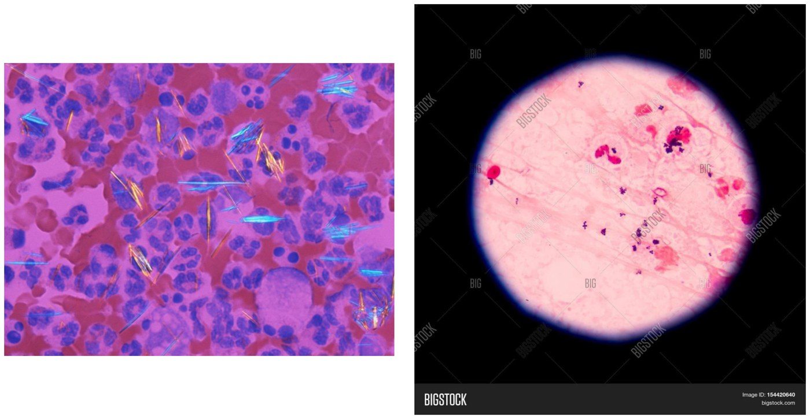
Back to the 28-year-old
Aspirate: 21,500 cells (this shows on the chart as “21.5”), mostly neutrophils, no crystals: inflammatory, but lower than you'd expect for a bacterial joint. Then you notice pustules on his skin. Young and sexually active: think disseminated gonococcal infection.
How It Happens and What Grows
“Why is there bacteria in this knee?” Most people assume trauma, but the vast majority are hematogenous: a small break in the skin, bacteremia, then seeding of the joint. Direct inoculation (trauma, surgery) is the minority. Synovial fluid is a “petri dish”; it's the inflammatory response (neutrophils, cytokines, enzymes) that destroys the joint.
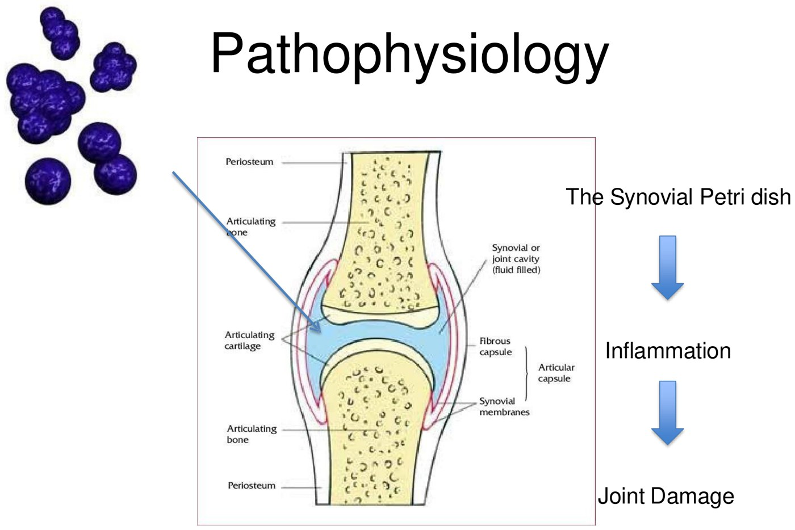
Petri dish → inflammation → joint damage. From the deck.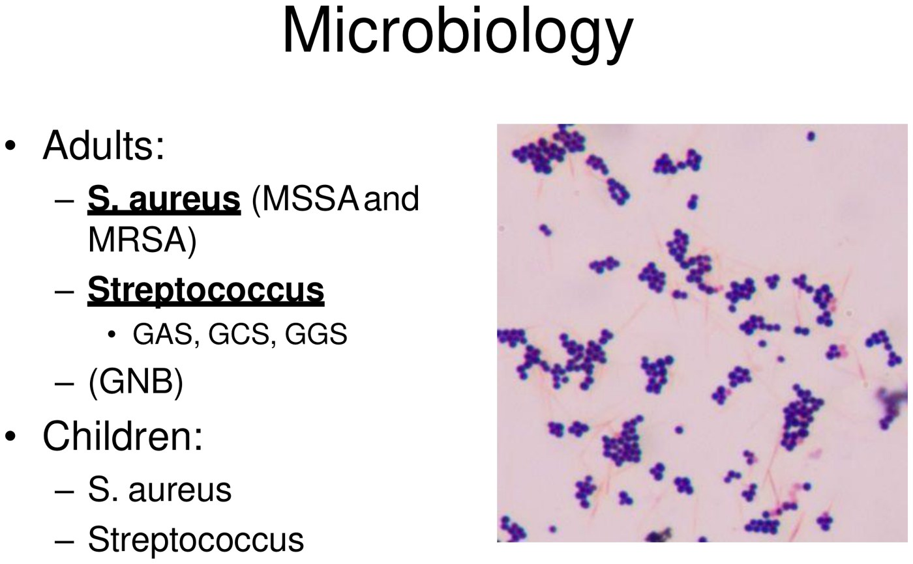
The organisms: S. aureus and beta-hemolytic strep. From the deck.| Who | Organisms |
|---|---|
| Adults | S. aureus (MSSA and MRSA); streptococci: group A (S. pyogenes), also groups B, C and G; rarely Gram-negative bacilli |
| Children | S. aureus, streptococci (see 10.9 for the limping child) |
Treatment
Decompress the joint, irrigate out the organisms and the proteolytic and lysosomal enzymes, debride necrotic tissue. The goal is to save the synovium as an immune barrier. They may need to go back more than once.
Cefazolin (Ancef) 2 g IV q8h covers S. aureus and the beta-hemolytic streptococci. Vancomycin 15 mg/kg + ceftriaxone 2 g IV q24h if MRSA risk (injection drug use, known colonization); many use it reflexively, which isn't necessary. A Gram-negative on culture gets targeted therapy.
References say 2–4 weeks; in practice S. aureus gets 4–6 weeks. The OVIVA trial (below) supports switching to oral.
Culture negative? Usually because antibiotics were given before the tap (streptococci die quickly with a beta-lactam). Then think of the organisms that don't grow on routine culture.
Other Infectious Causes
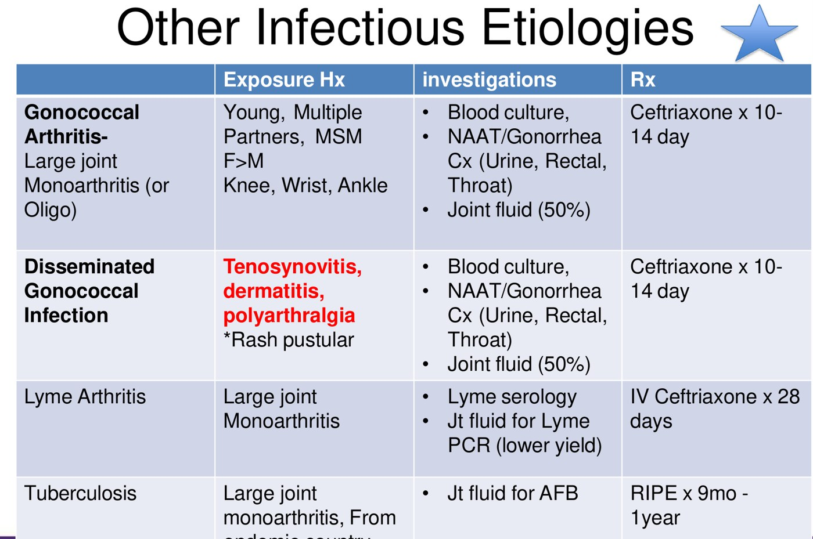
| Cause | Clue | Tests | Treatment |
|---|---|---|---|
| Gonococcal arthritis | Young, multiple partners, MSM, F > M; large-joint mono- or oligoarthritis (knee, wrist, ankle) | Blood cultures; NAAT/culture of urine, rectum, throat; joint fluid (positive in only ~50%) | Ceftriaxone × 10–14 days |
| Disseminated gonococcal infection | Triad: tenosynovitis, dermatitis (pustular rash), polyarthralgia | Same | Same |
| Lyme arthritis | Hiking in an endemic area; large-joint monoarthritis | Lyme serology; joint-fluid PCR (lower yield) | IV ceftriaxone × 28 days |
| Tuberculosis | From an endemic country; subacute large-joint monoarthritis | Joint fluid for AFB | RIPE × 9 months–1 year |
| Infectious polyarthritis | |
|---|---|
| Bacterial | Think infective endocarditis! |
| Viral | Parvovirus B19 (with anemia); chikungunya, Zika, dengue (travel); hepatitis B and C, HIV |
| Older patient: septic joint or gout? | Septic arthritis | Gout |
|---|---|---|
| Fever | ± | ± (gout can cause fever) |
| Blood | Leukocytosis | |
| Joint fluid | Positive Gram stain or culture | 20,000–50,000 cells; monosodium urate crystals on microscopy |
Reactive arthritis: a mono- or oligoarthritis days to weeks after a GI (Campylobacter, Salmonella, Shigella, Yersinia, C. difficile) or GU (Chlamydia trachomatis) infection, ± dactylitis and enthesitis; HLA-B27. Only a small subset has the full Reiter triad: urethritis, conjunctivitis, arthritis (“can't pee, can't see, can't climb a tree”).
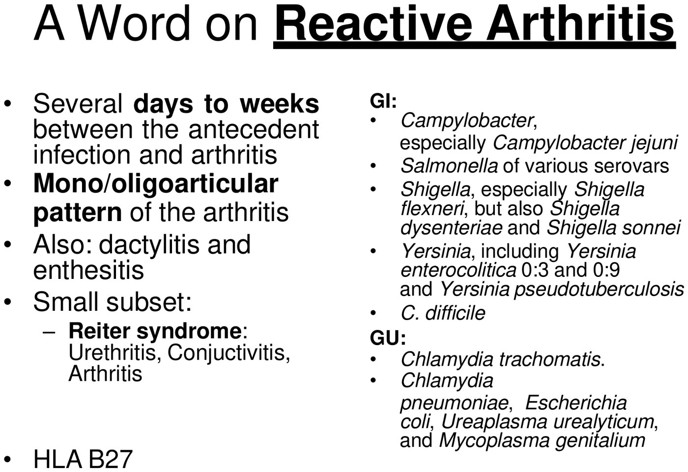
Don't put a needle into a prosthetic joint in the ED or the office. It's managed by the orthopedic surgeon (the one who did it, or a tertiary centre) with ID. It may not look like a red hot knee: less virulent organisms (coagulase-negative staphylococci, Cutibacterium [formerly Propionibacterium] acnes) give indolent pain or a draining sinus, so keep a high index of suspicion. Early vs late infections are handled differently.
Osteomyelitis
Infection of the bone: simple to define, hard to treat.
How Bone Gets Infected
| Route | Typical settings |
|---|---|
| Hematogenous seeding | Vertebral osteomyelitis, pediatric OM (most cases) |
| Non-hematogenous (commoner overall): contiguous spread or direct inoculation | Diabetic foot infection, next to a cellulitis; trauma; post-surgical (e.g. after a lumbar decompression) |
S. aureus dominates (septic joints have more streptococci). It's “sticky”: fibrinogen-binding adhesins, biofilm, and it can hide inside osteoblasts from the immune system.
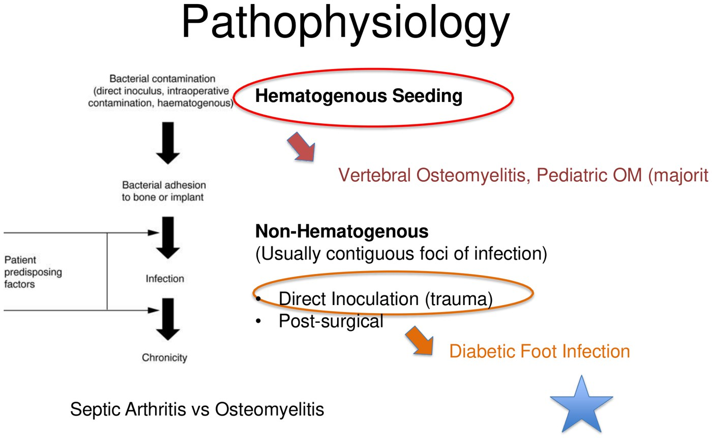
Hematogenous vs contiguous. From the deck.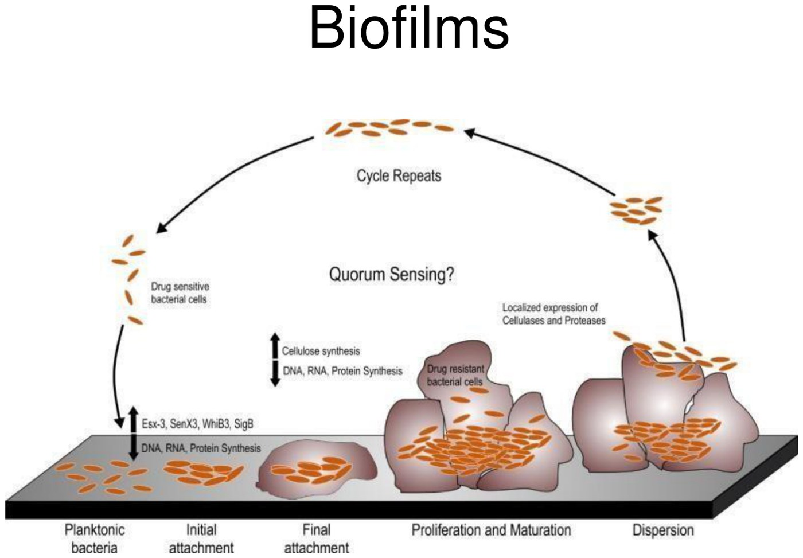
Biofilm: attach, multiply, signal (quorum sensing), mature, disperse. From the deck.Biofilms are everywhere (dental plaque, Pseudomonas in cystic fibrosis lungs) and grow on foreign bodies: prosthetic joints, heart valves, pacemakers. Bacteria deep in the film are metabolically inactive, and most antibiotics only kill replicating bacteria; the matrix also blocks penetration.
Acute vs Chronic Osteomyelitis
Bacteria on or in bone → inflammation (edema, vascular congestion, small-vessel thrombosis) → impaired blood supply → bone dies. Cancellous (spongy) bone is usually replaced; cortical bone may not be, leaving pockets of dead bone, the sequestrum. No blood supply means no antibiotic reaches it, so it seeds relapse after relapse.
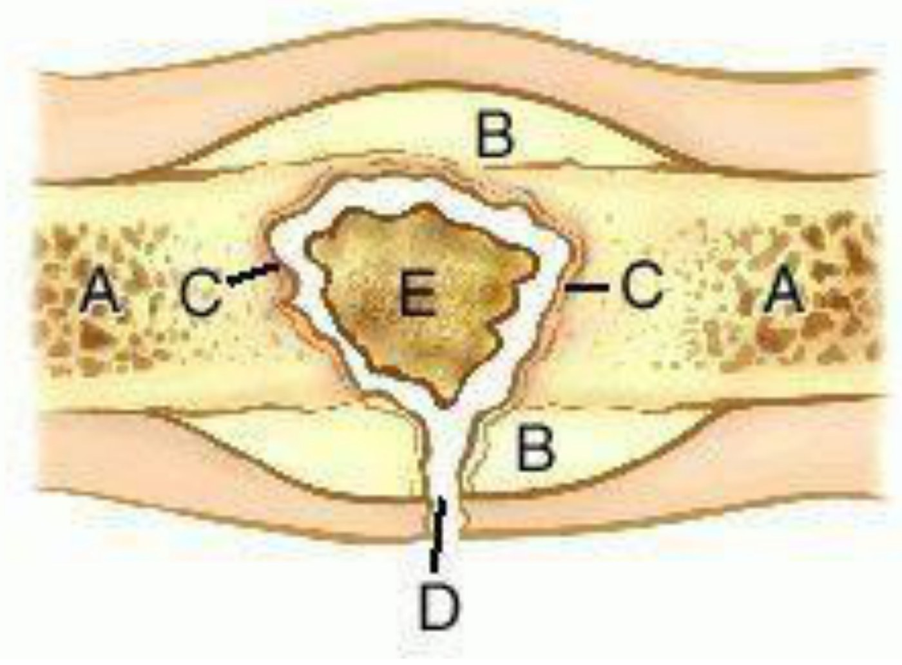
A sequestrum (E, the dead central bone) with a draining sinus (D). From the deck.Who Gets It, and Imaging
| Population | Notes |
|---|---|
| Diabetic foot | The commonest you'll see (contiguous or hematogenous); Part 4 |
| Vertebral (native vertebral OM) | People who inject drugs, middle-aged men; TB (Pott's disease) |
| Traumatic / surgical | Open fractures, surgical-site infections |
| Sacral wound | Pressure ulcers in quadriplegia, spina bifida, the bedbound: constant soiling with feces makes cure by antibiotics alone very hard |
| Children | Hematogenous, usually < 12 years, in the vascular metaphysis. Easier to treat (good blood supply). S. aureus always; Salmonella in sickle cell disease; Kingella (a Gram-negative bacillus, rising) and other Gram-negatives. |
Dr. Devlin leaves this one for you to look up. The usual explanation: repeated splenic infarction (functional asplenia) weakens clearance of encapsulated bacteria such as Salmonella; sickling causes bowel microinfarcts that let gut organisms into the blood; and infarcted bone is a good place for them to settle. (Added from outside the lecture: a PMC case review of Salmonella osteomyelitis in sickle cell anemia; the mechanism is mostly inferred from observational data.)
| Imaging | Use |
|---|---|
| X-ray, CT | Not sensitive enough to exclude OM; a good place to start (x-ray), and positive findings count |
| MRI | Most sensitive; the test for vertebral OM. Findings persist after cure, so don't routinely repeat imaging in someone improving on treatment (Choosing Wisely). |
| Nuclear medicine tagged WBC scan (with a bone scan) | Shows acute infection, including acute-on-chronic relapse; takes 2 days |
Treating Osteomyelitis
“What is my chance of curing this?” It depends on the blood supply, chronicity, whether it needs debridement, and patient engagement. Antibiotics alone will not save you; chronic OM usually needs a surgeon.
- Dose high (e.g. ceftriaxone 2 g IV q24h): bone has a poor blood supply, so you need high drug levels.
- Oral can be enough: the OVIVA trial (NEJM 2019) found that switching to oral antibiotics within the first week was non-inferior to 6 weeks of IV for bone and joint infections. Caveats: mostly hips, knees and feet (vertebral only ~2.5%), endocarditis and S. aureus bacteremia excluded, and the oral drug must be highly bioavailable (quinolones were used most; oral beta-lactams like cephalexin are less bioavailable). Dr. Devlin still prefers IV for vertebral OM.
Vertebral Osteomyelitis
55-year-old man, 5 days of 9/10 low back pain
Afebrile, HR 92, BP 140/70. Normal neuro exam: 5/5 strength, normal reflexes and sensation, normal anal tone, no saddle anesthesia. No classic red flags, but he is high risk (injects drugs). If it “smells a little iffy”, get the MRI.
Next steps: CBC, creatinine, CRP, blood cultures, and go straight to an MRI spine (not CT). Guidelines suggest a spinal biopsy; in practice it's often not done.
MRI: marrow edema and enhancement of L3 and L4 with irregular endplates = spondylodiscitis and osteomyelitis.
The module's knowledge check (a 45-year-old who injects drugs, new back pain, fever yesterday): order CBC, CRP and blood cultures to find the infection and the organism, and repeat CBC and CRP to follow treatment. CK and urine culture don't help (no urinary symptoms); a urine tox screen doesn't explain the pain.
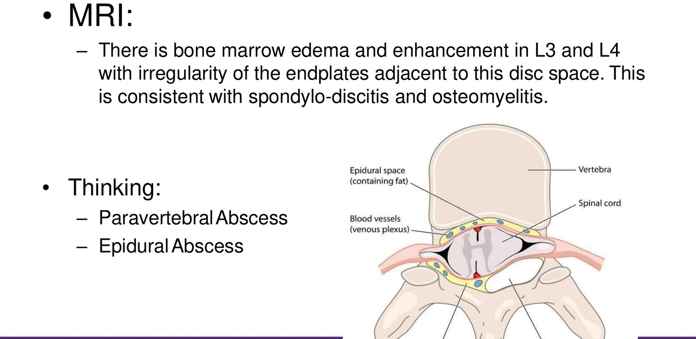
Read the report for “epidural abscess”: it can compress the cord. A paravertebral one sits beside the spine. From the deck.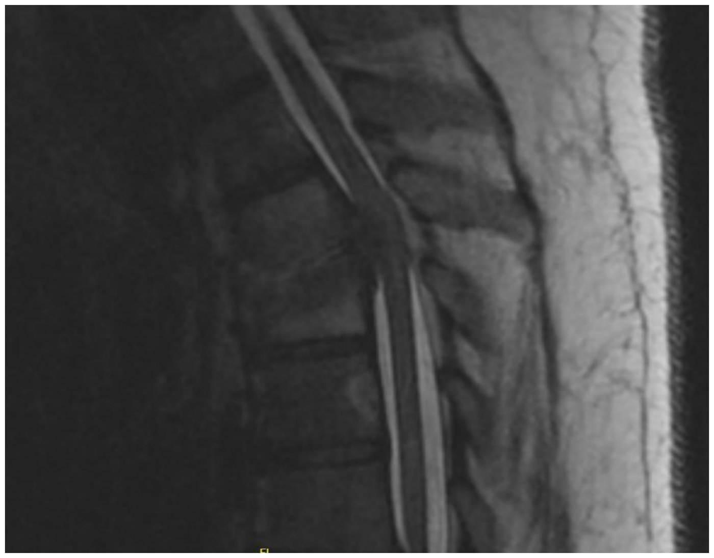
Spondylodiscitis on MRI. From the deck.| Microbiology hint | |
|---|---|
| S. aureus | The vast majority |
| Gram-negatives | Older men with BPH and recurrent UTIs |
| TB (Pott's disease) | Epidemiology (endemic country). Favours the thoracic spine; bacterial disease favours the lumbar. |
| Brucella | Epidemiology (e.g. the Middle East) |
| M. bovis | After BCG therapy for bladder cancer |
Treatment: 6 weeks of antibiotics, IV preferred here. The deck's empiric choice is IV vancomycin + ceftriaxone (vancomycin for possible MRSA, especially in people who inject drugs); target the organism once blood cultures are back. Any neurologic compromise or cord compression: call neurosurgery emergently. Longer courses are for specialists (not examined).
Diabetic Foot Infection
The one you'll see most. Ask why it happened, not just whether it hurts.
Why Diabetic Feet Get Infected
- Vascular: macro- and microvascular disease → poor blood supply → poor healing.
- Neuropathy: sensory (no warning pain), autonomic (dry, atrophic, cracked skin) and motor (claw and hammer toes, Charcot foot) → repeated pressure on one spot → ulcer.
- Immunity: diabetics are more infection-prone (e.g. weaker neutrophil function).
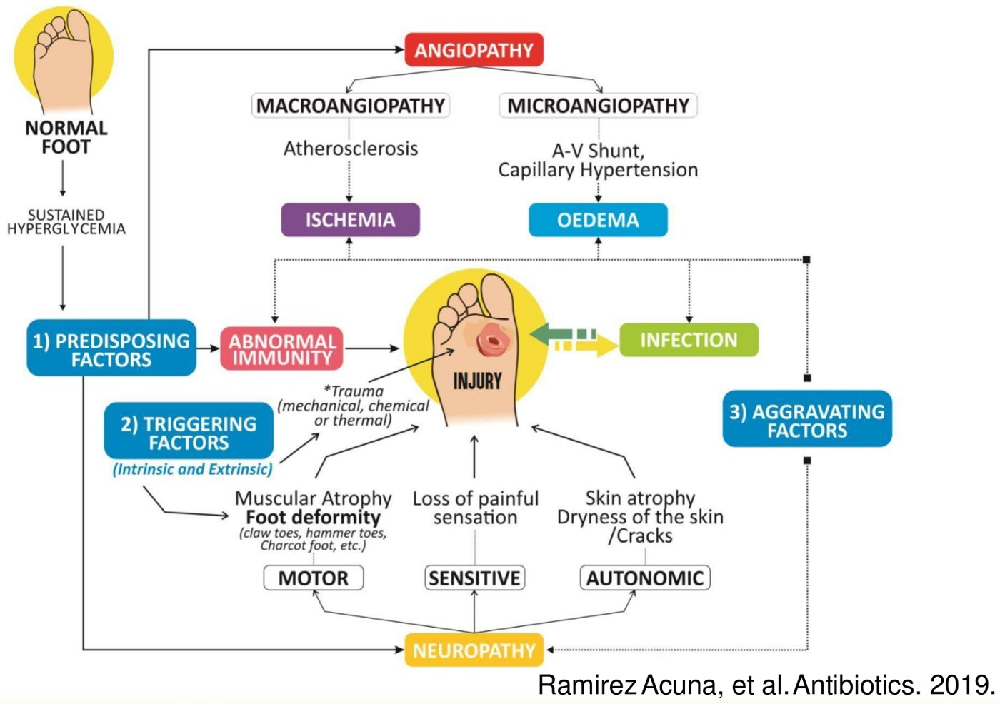
Assessment
| Ask | Why |
|---|---|
| Is it truly infected? | A wound isn't an infection |
| How long has it been there? | Years-old ulcers change the plan and the bugs |
| Systemic symptoms? | Fever, chills: be more aggressive |
| Why did this happen? | Soft tissue injury (new shoes or sandals, a scrape); mechanical (new job on their feet, not wearing the prescribed boot or orthotic); diabetic control (can they afford the meds?); known vascular disease, Charcot foot, prior ulcers |
Exam: the full diabetic foot exam: gait and footwear; skin (tinea, onychomycosis, calluses, cracks); bony deformity; monofilament (Canadian guidelines: 3 sites per foot; some sources use 10) and vibration; pulses (dorsalis pedis, posterior tibial). Then: where is it and why (how do they walk onto it)? Is blood supply the problem (vascular surgery)? How bad?
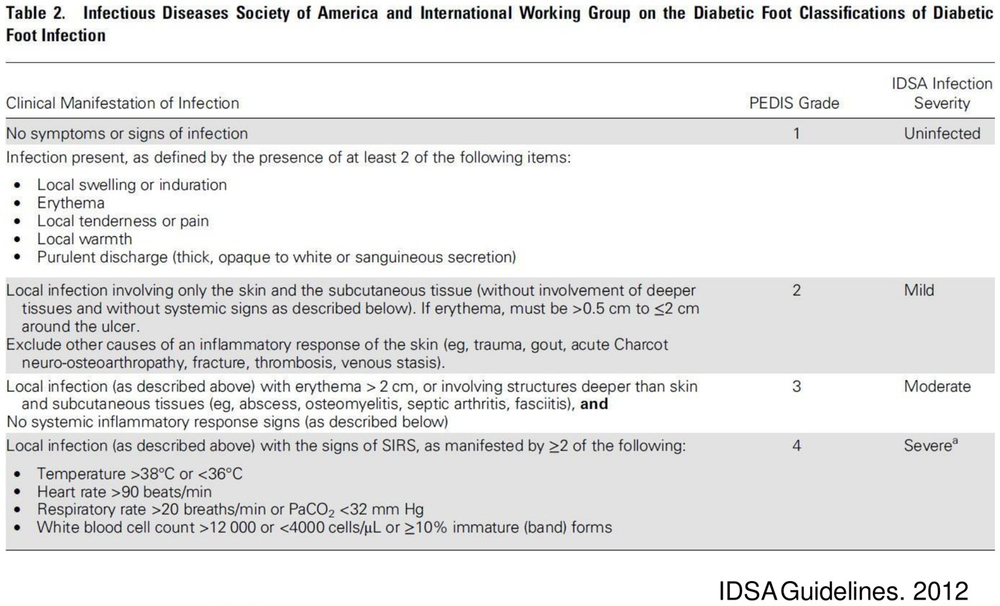
IDSA severity grades (2012). From the deck.| Severity | What it looks like | Likely bugs |
|---|---|---|
| Mild | A cellulitis around the wound | Staph and strep |
| Moderate | Deeper than the skin, or erythema > 2 cm | ± polymicrobial |
| Severe | Moderate + systemic features (SIRS): admission, ortho | Polymicrobial |
- Smelly = anaerobes (not Pseudomonas, as many assume).
- Probe to bone = high likelihood of osteomyelitis. Dead tissue: you can probe firmly.
Investigations: Swabs and Imaging
Bloodwork (CBC, electrolytes, creatinine, CRP) if they look unwell; CRP is very useful here.
1. Just because there is a wound doesn't mean it's infected. 2. If you swab any wound, you WILL find bacteria. Only swab a wound you think is infected, and get a good deep specimen (clean the surface first, e.g. with alcohol), not the skin colonizers on top.
| Imaging | Use |
|---|---|
| X-ray | A place to start: doesn't rule OM in or out (if you see it, it's probably there); shows deformity for ortho |
| MRI | Most sensitive, but changes lag behind clinical cure: never repeat it in a patient who's getting better |
| Tagged WBC scan | Relapsed or chronic OM: is there acute-on-chronic infection? |
Treatment
Multidisciplinary, and number one is the patient: their engagement and ability to offload. Then: blood supply (revascularization? there's no point to antibiotics in a gangrenous foot), chronicity (dead bone needs debridement), and offloading (a fitted boot at a diabetic foot clinic).
| Picture | Antibiotic |
|---|---|
| Mild, monomicrobial (cellulitis around a wound) | Oral: cephalexin, doxycycline, or amoxicillin-clavulanate; IV cefazolin if needed |
| Polymicrobial (chronic ulcer, colonized with Gram-negatives; smelly = anaerobes) | Amoxicillin-clavulanate; severe: IV ceftriaxone + metronidazole |
| Pseudomonas on a good swab, or very severe | Piperacillin-tazobactam |
| MRSA history or risk | Add vancomycin |
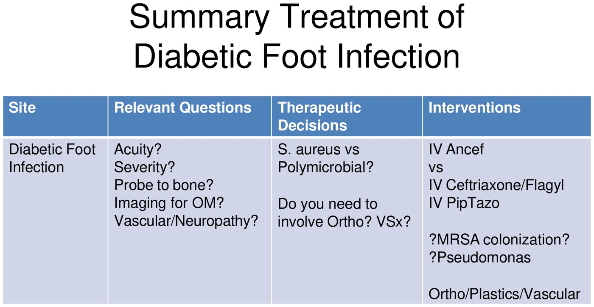
The summary table. From the deck.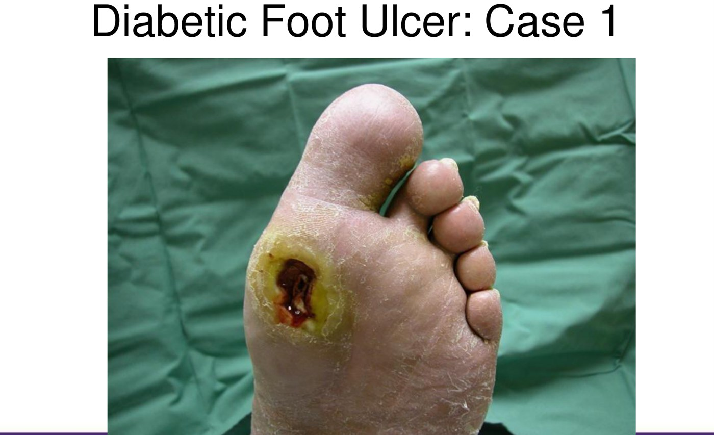
Case 1: callus and oozing, no surrounding erythema. From the deck.Case 1: callused plantar ulcer
Dry skin, no surrounding erythema, no deformity, but lots of callus and oozing. Infected? Hard to say. Ask: how long, what footwear keeps building the callus (which damages the tissue under it), and does it need debridement? Debriding the callus down to healthy tissue may mean no antibiotics at all; antibiotics alone would do nothing.
Case 2: ulcer with a discoloured toe
Diffuse ulceration and a dusky fourth toe: worry about blood supply (palpable pulses don't exclude microvascular disease). Involve vascular surgery; systemic therapy such as ceftriaxone + metronidazole or piperacillin-tazobactam.
Any severe infection: exclude necrotizing fasciitis; blood cultures; a deep swab if you can; call ortho or vascular; start piperacillin-tazobactam (+ vancomycin if MRSA history or risk).
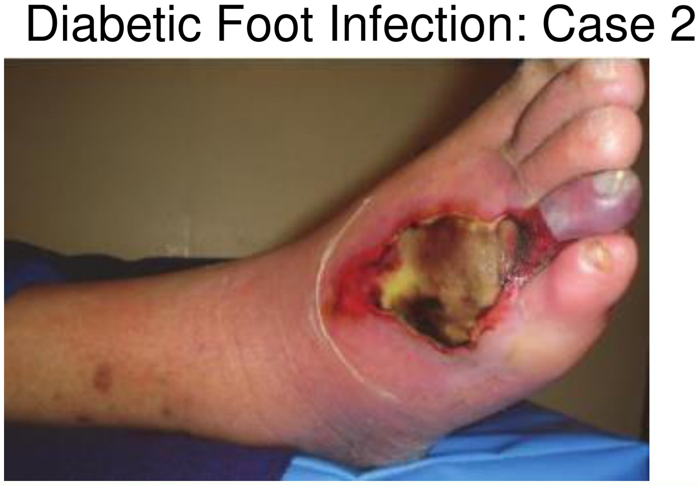
The module's prevention question (Moishe, 62, A1c 9.2%, new cashier job on his feet, tight running shoes): his helpful steps are foot orthotics, inspecting his feet daily and seeing a podiatrist (regular checks, fast response). Merely having a metformin prescription doesn't help; taking it does. The new job on his feet is a risk, not a protection.
Built from the “MSK Infections” module (Dr. K. Faber's hand infections deck and Dr. M. Devlin's septic arthritis, osteomyelitis and diabetic foot decks, Fall 2020), its four recordings and its three knowledge checks. Cartoon, movie and decorative slides are left out. Outside additions: the Salmonella/sickle cell mechanism (a PMC case review; Dr. Devlin asks students to look it up) and the Pott's disease detail (Radiopaedia, which puts TB spondylitis mostly at the lower thoracic and upper lumbar levels and notes relative disc sparing and large paraspinal abscesses). Notes: the auto-captions on the septic arthritis recording say “group B streptococcus” where the slide says group A (S. pyogenes); the page follows the slide. The deck spells “Eichenella”; the organism is Eikenella corrodens. The recording calls Kanavel a medical student; Allen Kanavel was a Chicago hand surgeon who described the signs.